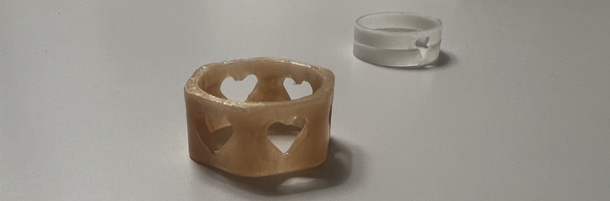
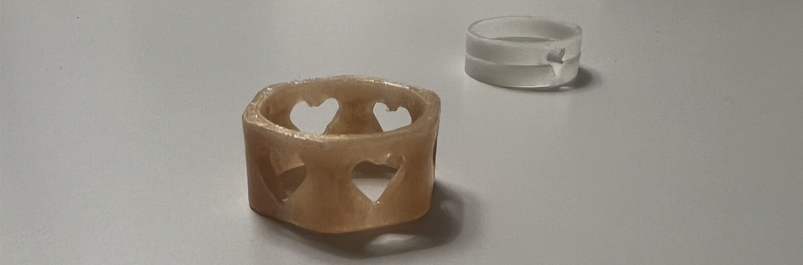

Verkefni 3

3D - Prentun
Fyrri hluti verkefnis 3 gengur út á að hanna 3D módel sem ekkert er hægt að framleiða með frádráttarframleiðslu, t.d. með geislaskera.
Undirbúningur og purfa
Áður en hafist var við handa að hanna módel, var hópverkefnið. Ég og Margrét Maren völdum okkur 3D prentara og ræddum hönnunarreglurnar. Meðal þeirra var að mikilvægt er að passa að 3D prentarinn, getur ekki prentað neitt í lausu lofti, sem er mikilvægt að vita áður en hönnun hefst.
Næsta skref var að ákveða hvað ég ætlaði að hanna. Mig langaði að hanna eitthvað flott, eitthvað sem ég gæti notað. Ég ákvað að hanna hringi. Ég hannaði þrjá hringi í Fusion 360. Það hefði verið gott að framkvæma prufu, þá sérstaklega prufa hver þykkt hringjanna mætti að vera, en þar sem hringir voru aðeins um eða undir 1 grammi af efni, fannst mér það í raun óþarfi.
Innblástur
Hugmyndin á því að gera hring kom í raun vegna þess að þegar ég var yngri, fannst mér gaman að gera hringi úr leir. Þá leiraði ég hringi í alls konar litum, setti mynstur, og leyfði leirnum að harna. Ég pússaði þá og setti glært naglalakk yfir. Mér fannst líklegt að hringir sem væru 3D prentaðir gætu komið út svipað og þeir.
Ég ákvað næst að leita 3D printed rings á google, og sá að þetta hefur verið gert áður. Þær útkomur sem komu á google litu vel út, og ákváð þá að hanna nokkra hringi sjálf og prenta. Eins og kom fram hér að ofan, þarf svo lítið efni í hringi, og því erfitt að gera prufu. Hringirnir voru þá eiginlega prufan sjálf, það er að ef þeir hefðu komið illa út, þá hefði ég skoðað hvers vegna það var og reynt aftur. Ég passaði að stilla þeim upp þannig að 3D prentarinn myndi ekki prenta í lausu lofti, ásamt því að hafa þá ekki of þunna. Þeir hringir sem ég sá á google voru líklega svona 2 mm - 7 mm þykkir, svo ég hafði ákveðna hugmynd um hvað þeir gætu verið þykkir.
Hönnun á hring 1
Fyrsti hringurinn sem ég ákvað að gera var 10 mm hár, og innra þvermálið var 19 mm, til þess að hann myndi passa á þumalinn minn. Til þess að mæla stærð þumals, og annarra putta notaði ég garn og vafði um fingurinn. Svo klippti systir mín spottann og við mældum lengdina með reglustiku. Ummálið á þumlinum mínum var um 55 mm. Þvermálið var því um það bil 55 / 3,14 = 17,5 mm og því hafði ég hafa innra þvermál hringsins 19 mm.
Teikna hring 1 í Fusion
Ég var ákveðin í því að vilja hafa nokkur göt sem voru hjartalaga á hringnum. Hugmyndin var að það væri erfitt að skera út hjörtu á hlut sem ekki er flatur og því væri auðveldara að 3D prenta hann. Næst vildi ég ekki hafa hann jafnan þykkan alls staðar, og byrjaði á því að hanna einhvers konar súlur umhverfis hringinn. Mér fannst það ekki koma vel út og ákváð þá að hafa hringinn misþykkan. Hér fyrir neðan má sjá myndband af teikniferlinu í Fusion, ásamt mynd af lokaútkomunni. Hönnunarskjöl má finna neðar á síðunni.

Hönnun á hring 2 og 3
Hinir hringirnir voru með aðeins minna þvermál, til þess að þeir gætu passað á baugfingur. Ég tók ummálið á baugfingri á sama hátt og ég gerði fyrir fyrsta hringinn. Ummálið var um það bil 50 mm og innra þvermál hringsins því 50 / 3.14 = 15.5 mm. Innra þvermál hringsins var því um það bil 17 mm. Hugmyndin var sú að hafa hálft hjarta sem er skorið út úr báðum hringum, þannig að hjörtun á hringjunum tveimur myndu passa saman.
Teikna hringi 2 og 3 í Fusion
Þessir hringir voru bæði þynnri og ekki jafn háir og sá fyrsti. Ég var ákveðin í því að vilja hafa þá minni og fíngerðari. Það var mikilvægt að hafa tvö body, þar sem þetta eru tveir hringir. Hér fyrir neðan má sjá myndband af teikniferlinu í Fusion, ásamt mynd af lokaútkomunni. Hönnunarskjöl má finna neðar á síðunni.

Prusa
Þá var komið að því að setja hringina inn í Prusa, til þess að ég gæti prentað þá út. Ég byrjaði á því að downloada Prusa . Þá var lítið mál að uploada Fusion 360 skjalinu inn í forritið og laga stillingar. Þar sem hringirnir voru aðeins 0.5 - 1 gramm, var mikilvægt að hafa stillingar stilltar þannig, að það verði tekið tillit til smáatriða og gæði yrðu sem best.
Ég passaði að hafa hringina þannig, að efri hluti hjartanna væri á hvolfi, svo prentarinn þyrfti ekki að prenta í lausu loft. Svo hakaði ég við "brim" vegna þess að þykkt botns var ekki mjög mikil, og það er æskulegt að veita hlutnum auka stuðning þar sem hluturinn er lítill.
Hér má sjá uppsetningar í Prusa, ásamt stillingum. Vert er þó að athuga að á fyrra myndina var ekki búið að haka í "brim".


Hönnunarskjöl má finna neðar á síðunni.
Val á efni
Áður en ég prentaði hringina, valdi ég efni. Ég ákvað að prenta stærri hringinn með gulllituðu plasti, og minni hringina með glow in the dark plasti.
Prentun
Prentunin gekk vel og hringirnir komu vel út. Þó var eitthvað um þráða í götum, sem ég fjarlægði með hníf. Það eru nokkrar ástæður fyrir því að þræðir myndist við 3D prentun. Ef hitastig prentarans er of hátt, getur plastið orðið of mjúkt og það flæðir á milli gata. Þræðir eru líklegri til að myndast í minni hlutum, þar sem plastið þarf að vera mjög heitt, til þess að passa upp á að smáatriði sjáist vel. Einnig gæti verið að prentarinn hafi verið á aðeins of miklum hraða, og náði þess vegna ekki að hætta alveg að prenta, á meðan hann fór milli gata.

Lokaútkoma
Hringirnir komu vel út. Ég skar af stuðninginn, og þræðina. Síðan pússaði ég hringina niður með naglaþjöl, og setti svo glært naglalakk yfir, til þess að fá smá glans. Hér er lokaútkoman:
 


Hér má finna hönnunarskjölin:
3D skönnun
Annar hluti verkefnisins var að 3D skanna einhvern hlut. Ég byrjaði á því að downloada 3DF Zephyr . Næst horfði ég á eftirfarandi myndband og fylgdi því, til þess að skanna hlutinn inn.
Val á hlut
Áður en ég valdi mér hlut, las ég mér til um hvers konar hluti væri best að 3D skanna. Mikilvægt er að hluturinn hafi ekki of mikil smáatriði, þar sem hámarksfjöldi mynda í hugbúnaðinum er aðeins 50 myndir. Ég fann litla styttu heima hjá mér, og ákvað að skanna hana inn.

Fyrsta útkoma
Þegar ég setti inn 50 myndir voru aðeins undir 10 af þeim sem ég tók nothæfar og 3D skönnunin því mjög óskýr. Ég prófaði aftur, og fékk ávalt frekar lélegar útkomur. Ég prófaði aðra hluti líka, en lenti í því sama. Þá sótti ég forritið Qlone og það virkaði mun betur. Ég notaði þá útgáfu sem er frí, og setti mottu sem fylgir forritunu undir hlutinn. Næst tók eg myndir út mörgun sjónarhornum og fylgdi leiðbeiningum sem forritið gaf.
Útkoman 3D skönnunar
3D skönnunin kom ágætlega út. Hér er útkoman.

Tímaskráning verkefnis
| Hluti verkefnis | Tími |
|---|---|
| Velja verkefni | 1 klst |
| Undirbúningur | 1 klst |
| Mælingar | 1 klst |
| Teikna í Fusion og uppsetning Prusa | 2 klst |
| Test | 1 klst |
| 3D prentun | 1 klst |
| Lakka hringi og pússa | 2 klst |
| 3D skönnun - heild | 5 klst |
| Uppfæra vefsíðu | 7 klst |
| Samtals | 21 klst |
Leitarorð
3D printed rings, 3D printing ideas, 3D printed rings, 3D printing common materials, how to use 3DF zephyr, good 3D scanning apps, good objects to 3D scan.